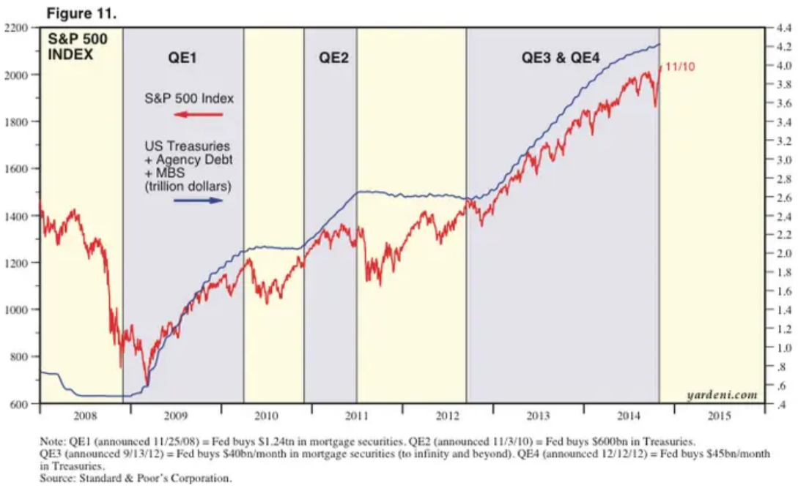

Does monetary easing causes "asset inflation"?
Introduction
Some people say that monetary easing by the central bank in the past decade is not affecting the CPI but the asset prices (stocks and bonds).
To see how this is wrong (?) we need to understand inflation, monetary policy and modern finance.
Inflation
Results from excess demand for goods and the ability of the supply side to provide.
Monetarist
Right wingers can be so fanciful about their intellectual inheritance. – critical mass (FT comment)
The other is the fact that investment in the real economy seems to have reached a limit, or at least slowed to a snail’s pace, which means that the demand for capital is extremely low. If people are not building new businesses, that is a huge drag on aggregate demand. Why is this happening? In part it is the result of tech disruption of traditional industries. – Marty Edwards (FT comment)
Monetary policy
Antes de 2008
Depois de 2008
Modern finance
Modern finance is about stocks and bonds, not money; about capital markets, not money market; and about financiers, not bankers. Most important, is about stocks, not flows; and it focuses attention on movement of capital asset prices, not on movement of liquid bank reserves. — Perry Mehrling
Quantitative easing
Definição de QE
What Is Quantitative Easing, and How Has It Been Used? QE é compra de ativos pelo BC. Aumenta ativo e aumenta passivo (bank reserves).
Bank reserves and money supply
NYFED Bank reserves Desde a crise de 2008, as reservas bancárias junto ao BC aumentaram muito. Os livros de macroeconomia dizem que esse aumento implica numa multiplicação monetária e consequentemente pode gerar inflação. Mas não foi o que ocorreu. Diferente das circunstâncias convencionais, as reservas bancárias recebem juros, então há um tradeoff a ser vencido para que os bancos utilizem esses recursos.
QE e expansão do crédito
BC compra títulos com prazo longo, 10 a 30 anos, aumentando a demanda por esses títulos. O aumento do preço implica que o juros diminui (rendimentos ou yield diminui).
Isso estimula diretamente o crédito usado no mercado de capitais (hipotecas, debêntures, CDB) Estimula pois diminui o custo para se tomar crédito.
Artigo FT 2014
Subscribe to read | Financial Times Ele plotou monetary BASE e SP500, no próprio gráfico mostra correlação oposta. Errado concluir qualquer tipo de correlação desse gráfico, muito menos relação de causalidade.
Monetary Base é moeda (não confundir com dinheiro) mais reservas dos bancos no BC, é a parte líquida do dinheiro. Money supply inclui expansão da base monetária por meio de instrumento de crédito.
Efeito do QE em portfolios
Quando o BC compra títulos de longo prazo, no QE, ele põem pressões de aumento do preço desses títulos. Consequentemente, em títulos pré-fixados, os quais tem o rendimento calculado como valor presente dos pagamentos futuros, tem seu rendimento reduzido (diminui o yield). Pois para ter o como o valor presente aumentou, será necessário um rendimento menor para se ter o equivalente de pagamentos futuros.
Essa redução no rendimento desses títulos de renda fixa pode implicar em alterações no preço do risco usado em precificação de ativos, e.g. usando Capital Asset Pricing Model (CAPM).
Asset inflation
FED QE e S&P500
É fato que após o QE do FED o índice S&P500 subiu. Isso é o observado. Agora, concluir que a causa do rally de equities foi o QE é um salto argumentativo ingênuo. Correlação não indica causalidade.
Referências
-
Higher inflation is coming and it will hit bondholders | Financial Times
-
Minsky and Modern Finance. Perry Mehrling (2000).
-
Large-Scale Asset Purchases - FEDERAL RESERVE BANK of NEW YORK